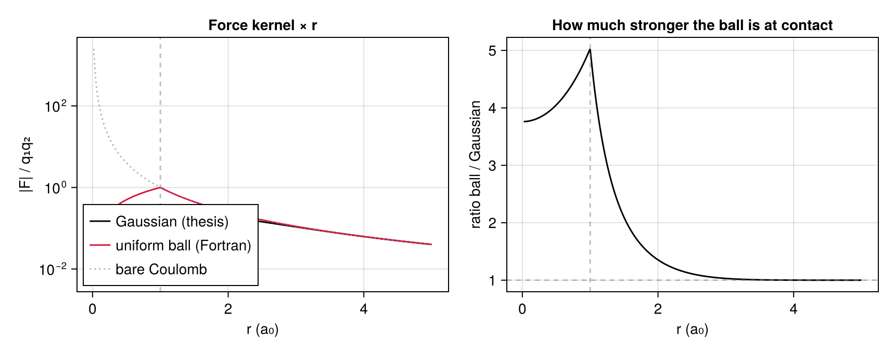
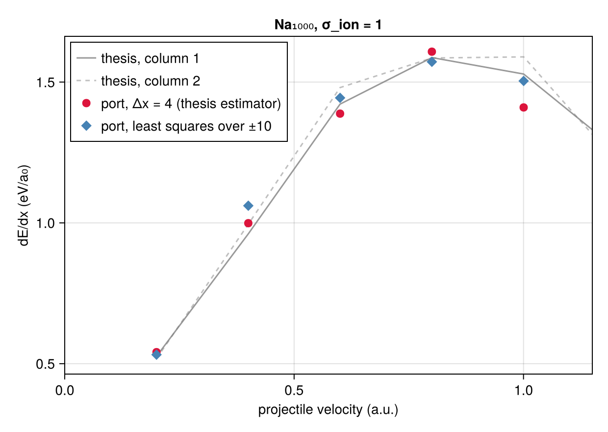

Validation
How we know the port is right — and the one place where being right meant not reproducing the original.
Validation runs on two legs. The oracle compares stage by stage against the instrumented Fortran, at machine precision. The standalone suite checks properties that hold with no external reference at all — exactness on cubics, fourth-order convergence, charge conservation, symplectic behaviour. Neither alone would be enough: the oracle proves we solve the same problem, the properties prove the problem is solved correctly.
The oracle
The original Fortran is compiled, instrumented to dump its intermediate arrays, and run. test/oracle.jl reads those dumps and compares.
ref/fortran/vlas.f ──modernize.patch──▶ compiles on gfortran
──instrument.patch──▶ dumps binary arrays
│
cd ref/fortran && make oracle
│
▼
dump_*.bin ──▶ test/oracle.jlThe dumps are not versioned; the tests skip themselves when they are absent.
The tolerance ladder
| Level | Where | Why |
|---|---|---|
| bit-for-bit | ran2, previous after a Verlet step | integer arithmetic; any difference shifts the whole sequence |
1e-13 | grids, collocation, operators, deposition, projectile | replaced building blocks (NAG f02agf → eigen, explicit inverse → factorisation) |
1e-11 | Poisson chain, moments, smoothing tables | accumulated over a full solve |
1e-10 | the stretched grid rebuilt from scratch | the Fortran's findacc stopped its bisection there |
One detail decides several of these: the Fortran declares pi = 3.141592653589d0, three decimals short. The sampling angles inherit it, so initial positions agree to 1e-11 and not 1e-13. With the truncated π substituted in, the agreement falls to 4e-17 — the discrepancy comes from there and nowhere else.
What is compared
Fine grid and collocation; the 1D operator and its spectrum; multipole moments; the stretched coarse grid; charge deposition; the full Poisson chain (boundary potential, right-hand side, solution, coefficients); the Verlet step; the smoothing tables, fields and forces; the smoothed deposit; the initial sampling, particle by particle; the projectile — forces, back-reaction, energies, its own step; the energy budget; the grid-to-grid matching.
A second oracle covers the 1998 version, whose initialise4 samples by rejection. There, r and p of pseudo-particle 109 match to the bit: they pass through no transcendental function, so their equality proves the rejection loop consumed the random stream exactly as the original did — rejection for rejection.
A full trajectory
Stage-by-stage agreement does not guarantee that a trajectory agrees: this is a chaotic system. So one crossing was run end to end against the Fortran.
| Quantity | Julia | Fortran | Difference |
|---|---|---|---|
| final position | 98.50 | 98.81 | 0.3 % |
| total loss | 49.08 eV | 47.57 eV | 3.2 % |
| dE/dx inside the cluster | 1.0012 | 0.9961 eV/a₀ | 0.5 % |
Step by step over the first 257:
| step | x (Julia) | x (Fortran) | loss (Julia) | loss (Fortran) |
|---|---|---|---|---|
| 1 | −69.717 | −69.717 | 0.0001 | 0.0001 |
| 100 | −41.706 | −41.706 | −0.0903 | −0.0926 |
| 200 | −13.432 | −13.432 | 13.839 | 13.771 |
| 257 | 2.602 | 2.604 | 30.981 | 29.896 |
The trajectories superpose to 2e-3 over 257 steps, and the loss diverges slowly — the expected behaviour of two chaotic systems started from the same point whose arithmetics differ in the last bit.
Anomalies in the original code
Ten were found. They are catalogued in full in docs/coquilles-fortran.md; here is the overview.
| # | Where | What | Effect | Available correction |
|---|---|---|---|---|
| 1 | moveback2 | dltt*2 for dltt**2 | measured: 0.06–0.71 σ | consistent = true |
| 2 | ran2 | IQ1 = 3668 for 53668 | measured: 0.27–0.33 σ | consistent = true |
| 3 | maketaint | truncated integration supports | smoothed field, ~1e-5 | — |
| 4 | initialise | integer reading a real | breaks rhoinit.dat | corrected (mandatory) |
| 5 | force2gi | one argument too many | dead code | corrected (mandatory) |
| 6 | makerhsf | multipoles computed then discarded | runtime, noise | — |
| 7 | ceq3d.f | π truncated to 12 decimals | ~1e-12 everywhere | not reproduced |
| 8 | pspech2 | stale rr in the ρ ≤ 1e-7 branch | measured: ‖csol‖ 6.3 → 704.4 | fixed by the author in 1998 |
| 10 | forceproji | uniform ball where the thesis states a Gaussian | dE/dx ×1.3 | GaussianSoftening |
Anomaly 9 (docapture using a different softening from incproj) affects a reported energy only.
Points 1, 2 and 3 are present identically in all five versions of the thesis code, and survive to the last one. They are not copying accidents: they crossed the entire development unseen. Point 8 is the exception — the author found and fixed it in early 1998.
Both have a "correct" form available under consistent = true. Running an isolated cluster both ways puts the difference at 0.06–0.71 σ of the sampling noise — that is, invisible. The port therefore reproduces the original by default, and the corrected forms exist for anyone who wants to check. That conclusion is scoped to that configuration and does not transfer to long runs or to single-trajectory crossings.
The softening: ball or Gaussian
This is the one that changes a physical conclusion.
The projectile's interaction with a pseudo-particle must be regularised at short range. The thesis states a Gaussian charge distribution of width σ_ion, giving a force kernel built on erf. The Fortran implements a uniformly charged ball of radius cutoff — in all 43 of its versions.
σ = 1.0
g, b = GaussianSoftening(σ), BallSoftening(σ)
r = range(0.02, 5σ; length = 500)
fig = Figure(size = (860, 340))
a1 = Axis(fig[1, 1], xlabel = "r (a₀)", ylabel = "|F| / q₁q₂",
title = "Force kernel × r", yscale = log10)
lines!(a1, r, [force_kernel(g, x^2) * x for x in r], color = :black,
label = "Gaussian (thesis)")
lines!(a1, r, [force_kernel(b, x^2) * x for x in r], color = :crimson,
label = "uniform ball (Fortran)")
lines!(a1, r, [1 / x^2 for x in r], color = (:gray, 0.6), linestyle = :dot,
label = "bare Coulomb")
vlines!(a1, [σ], color = (:gray, 0.5), linestyle = :dash)
axislegend(a1, position = :lb)
a2 = Axis(fig[1, 2], xlabel = "r (a₀)", ylabel = "ratio ball / Gaussian",
title = "How much stronger the ball is at contact")
lines!(a2, r, [force_kernel(b, x^2) / force_kernel(g, x^2) for x in r],
color = :black)
hlines!(a2, [1.0], color = (:gray, 0.5), linestyle = :dash)
vlines!(a2, [σ], color = (:gray, 0.5), linestyle = :dash)
fig
At equal radius the ball is markedly stronger at contact, and the two agree again beyond a few σ. Since the stopping power is accumulated precisely in close encounters, the choice propagates straight to dE/dx:
| Softening | dE/dx on Na₁₉₆ |
|---|---|
BallSoftening(1.0) — what the Fortran does | 1.01 eV/a₀ |
GaussianSoftening(1.0) — what the thesis states | 0.78 eV/a₀ |
| thesis figure | ≈ 0.70 eV/a₀ |
The port therefore offers both (Softening), and requires the choice to be explicit: constructing a Projectile with neither cutoff nor softening, or with both, raises an error rather than picking one.
The Gaussian kernel has one numerical subtlety worth stating. Written directly, [erf(r/√2σ) − 2 g(r) r] / r³ suffers catastrophic cancellation near zero — by u = 0.49 it has already lost a decimal and a half. Below a threshold the code switches to a series expansion, and the crossover is covered by tests on both sides.
The thesis curve, reproduced
With the Gaussian force, the thesis's velocity sweep comes back.
Na₁₀₀₀, σ_ion = 1, grid nfine = 44, rcluster = 78, rbox = 235 (h = 3.55 a₀), 800 000 pseudo-particles, start at x₀ = −65 as in the archived trajectories. Eleven minutes for the five points.
| keV | v | port, Δx = 4 | fit over ±10 | thesis (two columns) | difference |
|---|---|---|---|---|---|
| 1 | 0.200 | 0.541 | 0.532 | 0.526 / 0.518 | +3.6 % |
| 4 | 0.400 | 0.999 | 1.061 | 0.961 / 0.995 | +2.2 % |
| 9 | 0.600 | 1.388 | 1.444 | 1.422 / 1.480 | −4.4 % |
| 16 | 0.800 | 1.608 | 1.572 | 1.587 / 1.586 | +1.4 % |
| 25 | 1.000 | 1.410 | 1.504 | 1.529 / 1.590 | −9.6 % |
keV, c1, c2 = Float64[], Float64[], Float64[]
for l in eachline(joinpath(root, "ref/these/desdx.dat.1000"))
f = split(l)
length(f) == 3 || continue
push!(keV, parse(Float64, f[1]))
push!(c1, parse(Float64, f[2])); push!(c2, parse(Float64, f[3]))
end
v = sqrt.(2 .* keV .* (1000 / HARTREE_TO_EV) ./ 1836.154)
port_keV = [1, 4, 9, 16, 25]
port_v = sqrt.(2 .* port_keV .* (1000 / HARTREE_TO_EV) ./ 1836.154)
port_dx4 = [0.541, 0.999, 1.388, 1.608, 1.410]
port_fit = [0.532, 1.061, 1.444, 1.572, 1.504]
fig = Figure(size = (620, 440))
a = Axis(fig[1, 1], xlabel = "projectile velocity (a.u.)",
ylabel = "dE/dx (eV/a₀)", title = "Na₁₀₀₀, σ_ion = 1")
lines!(a, v, c1, color = (:gray, 0.8), label = "thesis, column 1")
lines!(a, v, c2, color = (:gray, 0.5), linestyle = :dash,
label = "thesis, column 2")
CairoMakie.scatter!(a, port_v, port_dx4, color = :crimson, markersize = 12,
label = "port, Δx = 4 (thesis estimator)")
CairoMakie.scatter!(a, port_v, port_fit, color = :steelblue, marker = :diamond,
markersize = 12, label = "port, least squares over ±10")
xlims!(a, 0, 1.15)
axislegend(a, position = :lt)
fig
Four points out of five land within ±5 % — which is the spread the two published columns have between themselves (2 to 4 %). The port reproduces the curve at the level of its own dispersion, maximum near v = 0.8 and decay beyond included.
The 25 keV point is the weakest, and the reason is the estimator rather than the physics: the thesis measures a slope over four bohr, and at v = 1 the projectile crosses them in four steps, so two points carry the whole result. The least-squares fit over ±10 a₀ brings that point back to −3.5 %.
At 20 000 the full trajectory is still right (total loss 73.7 eV against 76.1 for the archive, at 4 keV) but the four-bohr slope goes negative: the window is too narrow for the sampling noise. That is why production used that number, and it is the kind of thing one measures rather than guesses.
Replay it with scripts/figure53.jl.
The wake, reproduced
The stopping power is an integral of the response. Figure 5.2 of the thesis tests its spatial structure: the plasmon wake the ion leaves behind, of wavelength 2πv/ω_p. A wrong mean field could still integrate to a plausible dE/dx; it could not put the wake's nodes in the right places.

Same progression as the published panels: at 1 and 4 keV the ion drags a compact clump and nothing else; the wake appears at 9 keV and is unmistakable at 16. It is a velocity effect, which is why it is invisible in the panel one would naturally pick first.
Three display choices matter, and they were arrived at by measurement rather than taste:
ρ, notδρ. At 3.2 M pseudo-particles a fine-grid cell holds about 530 of them, so the shot noise is 4.4 % — the same order as the deformation. Onδρthat gives a signal-to-noise of 3 per cell and the picture reads as salt and pepper. Onρthe same grain is invisible.- Vacuum masked, top of the scale at
1.45·ρ_bulk. From0 → maxthe cluster body sits at 89 % of full scale and comes out one flat colour: the whole range is spent on empty space. - No smoothing. A box blur over one cell divides the noise by 1.4 and turns the grain into large coherent blobs that look like structure. Averaging over
zfails symmetrically: the wake fits inside one cell inz, so a thicker slab dilutes the signal faster than it kills the noise — the measured optimum is|z| ≤ 2 a₀, worth 23 %, and a full-depth projection is worse than a single plane.
Replay it with scripts/figure52.jl (about 2.5 minutes on the GPU path).
Running the tests
julia --project=. -e 'include("test/runtests.jl")' # 4750 tests, ~34 s
cd ref/fortran && make oracle # enables the oracle tests